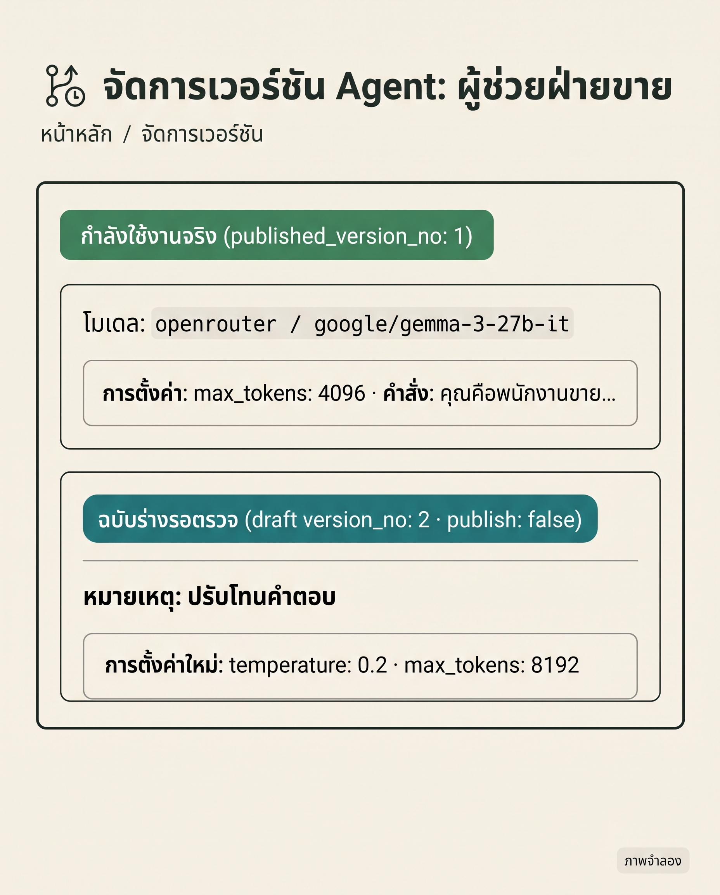
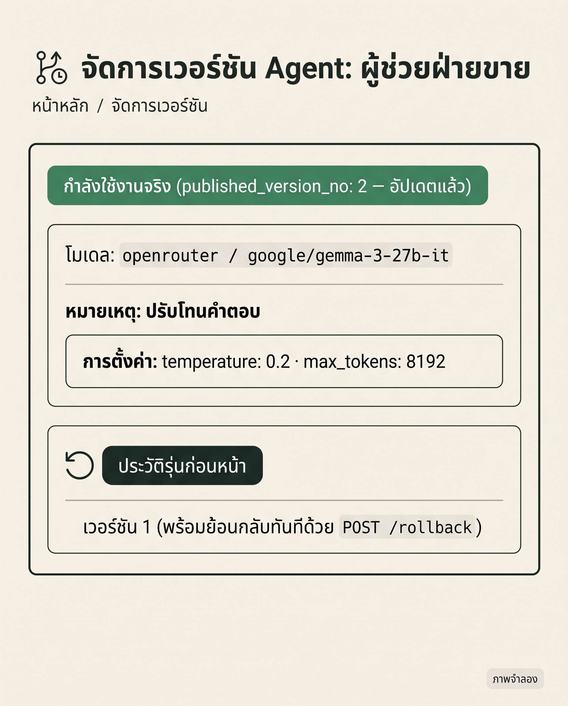

EP11 / AGENTS & VERSIONING
ภาพจำลอง
1 เตรียม2 เชื่อม3 ใช้ผล
จัดการเวอร์ชัน Agentปรับ Prompt · แยก Draft · Rollback


กำลังใช้งานจริง (v1) ⇄ ฉบับร่าง (v2)
ตรวจร่างมั่นใจก่อน Publish · Rollback ได้ทันที
เตรียมอะไร?
เชื่อมตรงไหน?
ใช้ผลยังไง?

ภาพรวมแยก Published ออกจาก Draft
สคริปต์หลังบ้าน / CI-CDควบคุมการอัปเดตรุ่นของ Agent
Keyสร้าง / แก้ร่าง
Publish / Rollback
LangMind Agents APIแยก Published v1 ออกจาก Draft v2
1 create v1
2 draft v2
3 publish/rollback
สนทนาเฉพาะ v ที่ publish
ลูกค้าและผู้ใช้จริงคุยปลอดภัย ไม่กระทบระหว่างแก้
1เตรียมต้องมี 3 อย่าง
LLM Credential บนเว็บตั้งค่า API Key ของโมเดลให้พร้อม
Provider Credentialโมเดลที่ได้รับสิทธิ์
API Key สิทธิ์คู่lmpat_••••••••
agents:read (อ่านโมเดล/รุ่น)agents:write (สร้าง/สลับรุ่น)
ต้องมีทั้ง
agents:read และ agents:write เพื่อจัดการรุ่นได้ครบระบบหลังบ้านหรือสคริปต์เก็บ Key ปลอดภัย · เรียก API อัปเดตรุ่นตามรอบ
2เชื่อมครั้งที่ 1 · เช็กโมเดล & สร้าง
สคริปต์ทีม
 Agents API
1 · เช็กโมเดล & สร้าง
ลูกค้าจริง
Agents API
1 · เช็กโมเดล & สร้าง
ลูกค้าจริง
GET /api/providers/models · ดูโมเดลที่ใช้ได้
POSTสิทธิ์ agents:write
/api/agents
Authorization: Bearer $LM_TOKEN
"provider_type": "openrouter", "model_name": "google/gemma-3-27b-it",
"name": "ผู้ช่วยฝ่ายขาย"
สร้าง Agent ใหม่ และ publish version 1 ให้อัตโนมัติ
{ "id": "agent_sale01", "name": "ผู้ช่วยฝ่ายขาย",
"published_version_no": 1
}สร้างเสร็จและเปิดใช้งานเวอร์ชัน 1 ทันที
2เชื่อมครั้งที่ 2 · บันทึกฉบับร่าง
สคริปต์ทีม
Agents API
2 · บันทึก Draft
ลูกค้าจริง
แก้ไข Config: temperature: 0.2 · max_tokens: 8192
POSTสิทธิ์ agents:write
/api/agents/{id}/versions
Authorization: Bearer $LM_TOKEN
"note": "ปรับโทนคำตอบ", "publish": false,
"config": { "temperature": 0.2, "max_tokens": 8192 }
validate กับ context window · ผู้ใช้จริงยังสนทนากับ v1 อยู่
{ "version_no": 2, "publish": false, "note": "ปรับโทนคำตอบ" }
✓ บันทึกเป็นฉบับร่าง (Draft) โดยยังไม่กระทบลูกค้า
2เชื่อมครั้งที่ 3 · Publish / Rollback
สคริปต์ทีม
Agents API
3 · Publish / Rollback
ลูกค้าจริง
เปิดใช้งานจริง หรือ Rollback ย้อนกลับ
POSTสิทธิ์ agents:write
/api/agents/{id}/publish (หรือ /rollback)
POST .../publish (ส่งว่าง = publish ร่างล่าสุดอัตโนมัติ)
POST .../rollback (ไม่ต้องมี body = ย้อนกลับ v1 ทันที)
สลับรุ่นใช้งานจริงในคำสั่งเดียว ไม่ต้อง deploy ใหม่
published_version_no: 2สลับเวอร์ชัน 2 ขึ้นใช้งานจริงสำเร็จ
Published ✓
3ใช้ผลการจัดการครบวงจร
PATCH vs /versions
แก้ Prompt/Model ต้องผ่าน
PATCH /agents/{id} แก้เฉพาะชื่อ/ไอคอน/visibilityแก้ Prompt/Model ต้องผ่าน
/versions เสมอคัดลอก Agent ด้วย duplicateส่ง
POST /agents/{id}/duplicate โคลนทั้งตัวเป็น Agent ใหม่>
ผูกทรัพยากรด้วย PUTผูก datasets, tools, credential ผ่าน
PUT /agents/{id}/...
เทคนิคสำคัญ:
ระบุ
→ มั่นใจ 100% ก่อนเปิดให้ผู้ใช้จริง
ระบุ
version_id ใน Chat API เพื่อทดสอบฉบับร่างก่อน publish→ มั่นใจ 100% ก่อนเปิดให้ผู้ใช้จริง
สรุปเตรียม → เชื่อม → ใช้ผล
1เตรียม
LLM CredentialAPI Key (read+write)สคริปต์หลังบ้าน
2เชื่อม
เช็กโมเดล/สร้าง (v1)→บันทึกร่าง (v2)→publish / rollback
3ใช้ผล
ทดสอบก่อนเปิดRollback ทันทีจัดการครบวงจร

สนับสนุนโดย
langmind.in.th
Agents APIVersioningDraft & PublishRollback
เวลาที่ Agent ใช้งานจริงอยู่
อยากแก้ Prompt ทำอย่างไรไม่ให้กระทบลูกค้า?
อยากแก้ Prompt ทำอย่างไรไม่ให้กระทบลูกค้า?
และถ้าผลลัพธ์ไม่เป็นไปตามคาด
จะย้อนกลับไปเวอร์ชันเดิมทันทีได้อย่างไร?
จะย้อนกลับไปเวอร์ชันเดิมทันทีได้อย่างไร?
ถ้าอยากจัดการรุ่นของ Agent แบบมืออาชีพ
ต้องเตรียมอะไร เชื่อมตรงไหน และใช้ผลยังไง
ต้องเตรียมอะไร เชื่อมตรงไหน และใช้ผลยังไง
ภาพรวมคือการแยกเวอร์ชันใช้งานจริง (Published)
ออกจากฉบับร่าง (Draft)
ออกจากฉบับร่าง (Draft)
โดยระบบหลังบ้านเรียก Agents API 3 ขั้นตอนหลัก
1.สร้าง Agent → 2.บันทึกร่าง (versions)
→ 3.สั่ง publish หรือ rollback
→ 3.สั่ง publish หรือ rollback
สิ่งที่ต้องเตรียม อย่างแรกคือ
ตั้งค่า LLM Credential บนเว็บให้พร้อม
ตั้งค่า LLM Credential บนเว็บให้พร้อม
อย่างที่สอง API Key ที่มีสิทธิ์
agents:read และ agents:write
agents:read และ agents:write
อย่างที่สาม ระบบหลังบ้านหรือสคริปต์
ที่เก็บ Key ไว้อย่างปลอดภัย
ที่เก็บ Key ไว้อย่างปลอดภัย
ครั้งที่ 1 เช็กโมเดล: GET /api/providers/models
รวม provider และโมเดลที่ใช้ได้ในคำตอบเดียว
รวม provider และโมเดลที่ใช้ได้ในคำตอบเดียว
นำ provider_type และ model_name
มาส่ง POST /api/agents สร้าง Agent
มาส่ง POST /api/agents สร้าง Agent
ระบบจะสร้าง Agent
และ publish เวอร์ชันที่ 1 ให้อัตโนมัติ
และ publish เวอร์ชันที่ 1 ให้อัตโนมัติ
ครั้งที่ 2 บันทึกฉบับร่าง: ปรับ Prompt
หรือค่า temperature และ max_tokens
หรือค่า temperature และ max_tokens
ส่ง POST .../versions พร้อมระบุ note
และตั้งค่า "publish": false
และตั้งค่า "publish": false
บันทึกเป็นเวอร์ชัน 2 ในสถานะฉบับร่าง (Draft)
โดยยังไม่กระทบลูกค้าที่ใช้งานเวอร์ชัน 1 อยู่
โดยยังไม่กระทบลูกค้าที่ใช้งานเวอร์ชัน 1 อยู่
ครั้งที่ 3 เปิดใช้งานจริง: POST .../publish
(ส่งว่างเพื่อ publish ร่างล่าสุดอัตโนมัติ)
(ส่งว่างเพื่อ publish ร่างล่าสุดอัตโนมัติ)
หากต้องการย้อนกลับ ส่ง POST .../rollback
ได้ทันทีโดยไม่ต้องส่งข้อมูลใน body
ได้ทันทีโดยไม่ต้องส่งข้อมูลใน body
PATCH /agents/{id} = แก้ชื่อ/ไอคอน/การมองเห็น
ส่วน Prompt หรือ Model ต้องผ่าน /versions เสมอ
ส่วน Prompt หรือ Model ต้องผ่าน /versions เสมอ
คัดลอก Agent ด้วย POST .../duplicate
และผูก datasets / tools / credential ผ่าน PUT
และผูก datasets / tools / credential ผ่าน PUT
สรุป: เตรียม API Key
สิทธิ์ agents:read และ agents:write
สิทธิ์ agents:read และ agents:write
เชื่อม 3 ขั้นตอน: สร้าง Agent (v1)
บันทึกร่าง (versions) · publish หรือ rollback
บันทึกร่าง (versions) · publish หรือ rollback
ช่วยให้ทีมพัฒนาบริหารจัดการรุ่นของ AI
ได้อย่างปลอดภัยทุกครั้ง
ได้อย่างปลอดภัยทุกครั้ง
คลิปนี้สนับสนุนโดย LangMind
เริ่มสร้างและบริหารจัดการ Agent ของคุณ
ได้ที่ langmind.in.th
ได้ที่ langmind.in.th